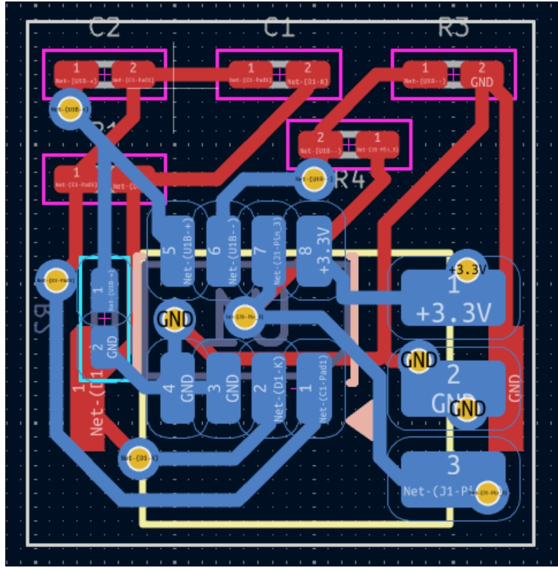
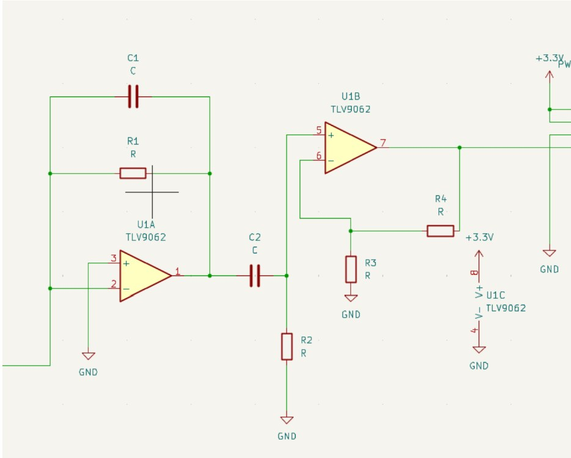
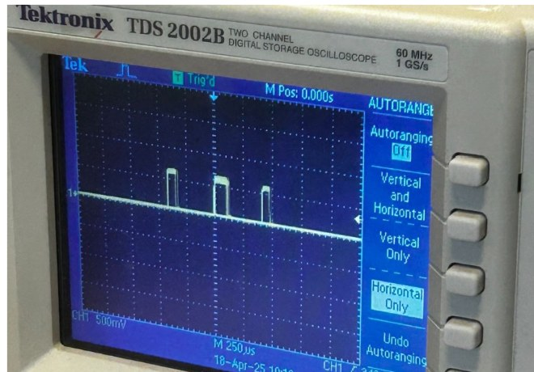
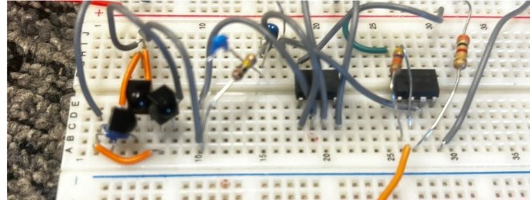

Penn Modular Robotics Laboratory · Embedded Sensing
Micro-UAV Optical Sensor PCB
Designing and miniaturizing a photodiode-based analog front end for lighthouse localization on a palm-sized aerial robot.



Extract reliable optical timing signals inside an extremely small airframe.
The mini UAV uses a lighthouse-style tracking system whose infrared sweeps must be converted into clean electrical pulses before the flight computer can estimate position. The sensing electronics therefore had to be sensitive, fast, compact, low-power, and physically small enough to fit on the vehicle.
My contribution
- Designed a photodiode analog front end around a compact dual operational amplifier.
- Combined transimpedance conversion, filtering, and additional voltage gain.
- Built a breadboard prototype to verify signal behavior before committing to a PCB.
- Used an oscilloscope to confirm clean, repeatable pulses from the lighthouse sweep.
- Selected compact packages and created custom footprints to meet severe space constraints.
- Laid out a two-layer 7 × 7 mm board in KiCad with power, signal, and connector routing.
From photodiode current to a digital-ready pulse.
The first stage converts the photodiode’s small current into a voltage using a transimpedance amplifier. A second stage provides additional gain and conditioning so the lighthouse sweep produces a signal with enough amplitude and edge definition for downstream timing electronics.
I selected the TLV9062 dual op-amp to consolidate both stages into a compact package while maintaining the bandwidth and rail-to-rail behavior needed for a 3.3 V system.
Verify the signal chain before shrinking it.
Before finalizing the board, I implemented the circuit on a breadboard and tested it against the lighthouse source. The oscilloscope trace showed distinct, trackable pulses, providing confidence that the circuit topology and component values could support the localization pipeline.

Packaging the complete sensing chain into 49 mm².
The final layout required aggressive component placement and routing while preserving sensible return paths, accessible connector pads, and manufacturable clearances. I assigned compact footprints, created custom geometry where needed, and iterated the placement around the dual op-amp and board-edge interface.
A complete design path from physics to a manufacturable board.
This project connected optical sensing, analog circuit design, instrumentation, component selection, footprint design, and physical PCB layout. It taught me to treat electrical performance and mechanical packaging as one coupled engineering problem.